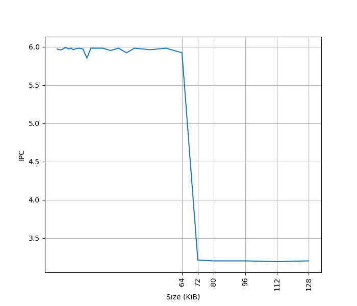
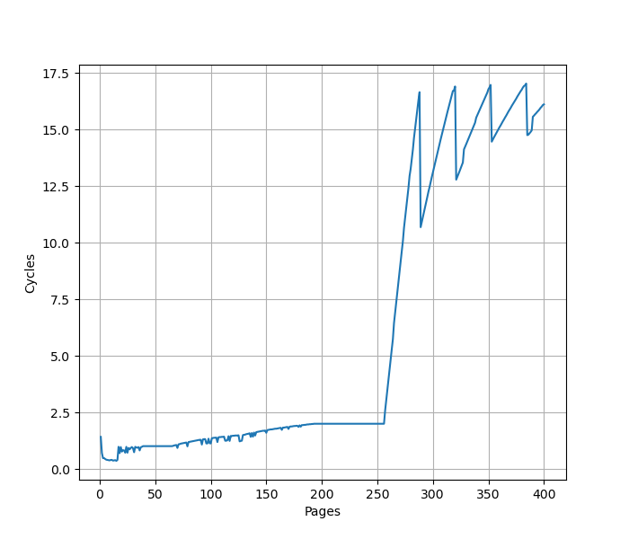
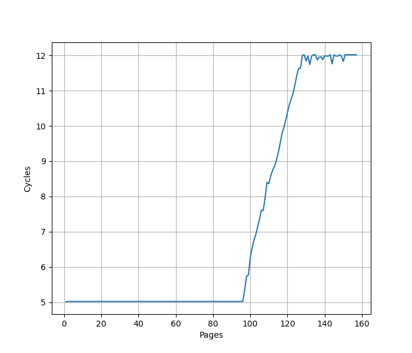
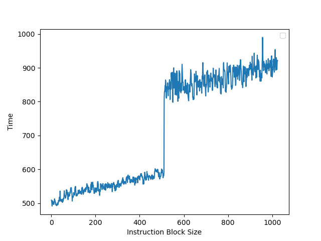

Intel Redwood Cove 微架构评测¶
背景¶
之前我们测试了 Intel 的微架构 Golden Cove，这次就来测一下 Redwood Cove，它被用到了 Meteor Lake 以及 Granite Rapids 上。这次就以阿里云 g9i 实例的 Granite Rapids 机器来测试一下 Redwood Cove 微架构的各项指标。
官方信息¶
Intel 关于 Redwood Cove 微架构有这些官方的信息：
- Intel® 64 and IA-32 Architectures Optimization Reference Manual Volume 1
- Meteor Lake Architecture Overview
现有评测¶
网上已经有较多针对 Redwood Cove 微架构的评测和分析，建议阅读：
- Intel’s Redwood Cove: Baby Steps are Still Steps
- Intel Unveils Meteor Lake Architecture: Intel 4 Heralds the Disaggregated Future of Mobile CPUs
下面分各个模块分别记录官方提供的信息，以及实测的结果。读者可以对照已有的第三方评测理解。官方信息与实测结果一致的数据会加粗。
Benchmark¶
Intel Redwood Cove 的性能测试结果见 SPEC。
前端¶
L1 ICache¶
官方信息：
- Larger instruction cache: 32K→64K.
为了测试 L1 ICache 容量，构造一个具有巨大指令 footprint 的循环，由大量的 4 字节 nop 和最后的分支指令组成。观察在不同 footprint 大小下的 IPC：

可以看到 footprint 在 64 KB 之前时可以达到 6 IPC，之后则降到 3.2 IPC，这里的 64 KB 就对应了 L1 ICache 的容量。容量相比 Golden Cove 翻倍，终于和 ARM 看齐。
L1 ITLB¶
构造一系列的 jmp 指令，使得 jmp 指令分布在不同的 page 上，使得 ITLB 成为瓶颈：

可以看到 256 个 Page 出现了明显的拐点，对应的就是 256 的 L1 ITLB 容量。注意要避免 ICache 和 BTB 的容量成为瓶颈，把 jmp 指令分布在不同的 Cache Line 和 BTB entry 上。
超过 256 个 Page 以后，如图有周期数突然下降后缓慢上升的情况（例如横坐标 288->289、320->321、352->353、384->385 等，以 32 为周期），背后的原理需要进一步分析，猜测和 Linux 的 Huge Page 机制相关。
Redwood Cove 的 L1 ITLB 容量和 Golden Cove 是一样的。
Instruction Decode Queue (IDQ) + Loop Stream Detector (LSD)¶
官方信息：
- Improved LSD coverage: the IDQ can hold 192 μops per logical processor in single-thread mode or 96 μops per thread when SMT is active.
为了测试 Instruction Decode Queue 的大小，构造不同大小的循环，循环体是复制若干份的 inc %rsi 指令，最后是 dec + jnz 作为循环结尾，通过 LSD.UOPS 性能计数器统计每次循环有多少个 UOP 来自于 Loop Stream Detector 机制，发现其最大值为 191，说明 Redwood Cove 的 Loop Stream Detector 可以识别最多 191 个 uop 的循环。此时每个循环要执行 192 条指令，最后的 dec + jnz 被融合成了一个 uop。相比 Golden Cove 的 144 uops IDQ 容量有所增加。
循环体中，如果用 nop 指令来填充，会得到 39 左右的比 192 小得多的容量，猜测是进入了低功耗模式。
Instruction Prefetch Instruction¶
官方信息：
- Code Software Prefetch x86 architecture extension (Granite Rapids only).
- PREFETCHIT0: (temporal code)—prefetch code into all levels of the cache hierarchy.
- PREFETCHIT1: (temporal code with respect to first level cache misses)—prefetch code into all but the first-level of the cache hierarchy.
Conditional Branch Predictor¶
参考 Half&Half: Demystifying Intel’s Directional Branch Predictors for Fast, Secure Partitioned Execution 论文的方法，可以测出 Redwood Cove 的分支预测器采用的历史更新方式为：
- 使用 388 位的 Path History Register，每次执行 taken branch 时更新
- 更新方式为：
PHRnew = (PHRold << 2) xor footprint - footprint 共有 16 位，其中 B 代表分支指令的地址，T 代表分支跳转的目的地址：
- footprint[0] = B[3] xor T[0]
- footprint[1] = B[4] xor T[1]
- footprint[2] = B[5]
- footprint[3] = B[6]
- footprint[4] = B[7]
- footprint[5] = B[8]
- footprint[6] = B[9]
- footprint[7] = B[10]
- footprint[8] = B[0] xor T[2]
- footprint[9] = B[1] xor T[3]
- footprint[10] = B[2] xor T[4]
- footprint[11] = B[11] xor T[5]
- footprint[12] = B[12]
- footprint[13] = B[13]
- footprint[14] = B[14]
- footprint[15] = B[15]
和 Golden Cove 是一样的。各厂商处理器的 PHR 更新规则见 jiegec/cpu。
后端¶
L1 DCache¶
构造不同大小 footprint 的 pointer chasing 链，测试不同 footprint 下每条 load 指令耗费的时间：
- 0KB-48KB: 5 cycle，对应 L1 DCache
- 48KB-384KB: 16 cycle，对应 L2 Cache，且命中了 L1 DTLB；说明 L1 miss L2 hit 带来了 11 cycle 的损失
L1 DCache 大小和 Golden Cove 相同。
L1 DTLB¶
用类似测 L1 DCache 的方法测试 L1 DTLB 容量，只不过这次 pointer chasing 链的指针分布在不同的 page 上，使得 DTLB 成为瓶颈：

可以看到 96 Page 出现了明显的拐点，对应的就是 96 的 L1 DTLB 容量。没有超出 L1 DTLB 容量前，Load to use latency 是 5 cycle；超出 L1 DTLB 容量后，Load to use latency 是 12 cycle，说明 L1 DTLB miss 带来了 7 cycle 的损失。
L1 DTLB 大小和 Golden Cove 相同。
执行单元¶
官方信息：
- EXE: 3-cycle Floating Point multiplication.
LSU¶
Load Store 带宽¶
针对 Load Store 带宽，实测每个周期可以完成：
- 3x 256b Load
- 2x 256b Load + 2x 256b Store
- 1x 256b Load + 2x 256b Store
- 2x 256b Store
- 2x 512b Load
- 1x 512b Load + 1x 512b Store
- 1x 512b Store
Store to Load Forwarding¶
经过实际测试，Redwood Cove 上如下的情况可以成功转发，对地址 x 的 Store 转发到对地址 y 的 Load 成功时 y-x 的取值范围：
| Store\Load | 8b Load | 16b Load | 32b Load | 64b Load |
|---|---|---|---|---|
| 8b Store | {0} | {} | {} | {} |
| 16b Store | [0,1] | {0} | {} | {} |
| 32b Store | [0,3] | [0,2] | {0} | {} |
| 64b Store | [0,7] | [0,6] | [0,4] | {0} |
可以看到，Redwood Cove 在 Store 完全包含 Load 的情况下都可以转发，没有额外的对齐要求。但当 Load 和 Store 只有部分重合时，就无法转发。两个连续的 32 位的 Store 和一个 64 位的 Load 重合也不能转发。
特别地，在 y=x 且不跨越缓存行边界且满足下列要求的情况下，Store Forwarding 不会或只带来很小的性能损失：
- 8b Store -> 8b Load
- 32b Store -> 8b Load
- 64b Store -> 8b Load
- 32b Store -> 32b Load
- 64b Store -> 32b Load
- 64b Store -> 64b Load
考虑到 y 必须等于 x，也就是地址要一样，猜测 Redwood Cove 使用了类似 Memory Renaming 的技术来实现这个效果。如果是连续两个对同一个地址的 Store 对一个 Load 的转发，效果和只有一个 Store 是一样的。
除了上述情况以外，Store Forwarding 成功时的延迟在 5 个周期，失败则要 19 个周期。
和 Golden Cove 是一样的。
小结：Redwood Cove 的 Store to Load Forwarding：
- 1 ld + 1 st: 要求 st 包含 ld，特别地，地址相同时，性能最好
- 1 ld + 2+ st: 不支持
Prefetcher¶
官方信息：
- New HW data prefetcher to recognize and prefetch the “Array of Pointers” pattern.
Intel Redwood Cove 的处理器通过 MSR 1A4H 可以配置各个预取器（来源：Software Developers Manual，Additional MSRs Supported by the Intel® Core™ Ultra 7 Processors Supporting Performance Hybrid Architecture）：
- MSR_1A4H[0]: the L2 hardware prefetcher, which fetches additional lines of code or data into the L2 cache.
- MSR_1A4H[1]: the L2 adjacent cache line prefetcher, which fetches the cache line that comprises a cache line pair (128 bytes). 这和 AMD 的 Up/Down Prefetcher 应该是一个意思
- MSR_1A4H[2]: the L1 data cache prefetcher, which fetches the next cache line into L1 data cache. 这个应该属于 Next Line Prefetcher
- MSR_1A4H[3]: the L1 data cache IP prefetcher, which uses sequential load history (based on instruction pointer of previous loads) to determine whether to prefetch additional lines.
- MSR_1A4H[4]: Next page prefetcher，当访问快走到一个页的结尾的时候，从下一个页的开头开始 prefetch，提前进行可能的 TLB refill
- MSR_1A4H[5]: the L2 Adaptive Multipath Probability (AMP) prefetcher. 这个应该属于 Spatial Prefetcher
- MSR_1A4H[6]: LLC page prefetcher，类似 Next page prefetcher 的思路，但是把虚拟地址上连续的两个 4KB 的页，一共 8KB 的数据预取到 LLC 缓存上
- MSR_1A4H[7]: Array of pointers prefetcher，针对指针数组
T *arr[]的场景进行预取 - MSR_1A4H[8]: Stream prefetch code fetch
ReOrder Buffer¶
为了测试 ROB 的大小，设计了一个循环，循环开始和结束是长延迟的 long latency load。中间是若干条 NOP 指令，当 NOP 指令比较少时，循环的时候取决于 load 指令的时间；当 NOP 指令数量过多，填满了 ROB 以后，就会导致 ROB 无法保存循环末尾的 load 指令，性能出现下降。测试结果如下：

当 NOP 数量达到 512 时，性能开始急剧下滑，说明 Redwood Cove 的 ROB 大小是 512。这和 Golden Cove 是一样的。
总结¶
Redwood Cove 相比 Golden Cove 是比较小的一个迭代，更新的部分主要有：
- 扩大了 L1 ICache 容量
- 扩大了分支预测器的容量（通过 MPKI 看出）
- 增加了更多预取器
因此性能提升也比较小，希望 Intel 可以更加给力一些，给 AMD 一些竞争压力。